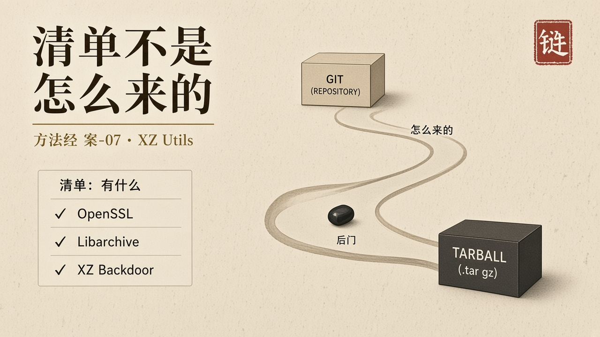
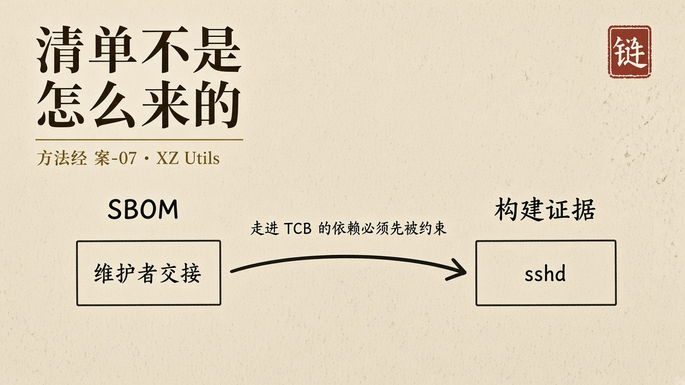

经过
2024 年 3 月 29 日，微软工程师安德烈斯·弗罗因德在 Debian 开发版环境中对 PostgreSQL 做基准测试时，注意到一件小事：SSH 登录耗时从约 100 毫秒变成约 500 毫秒。四百毫秒让他开始追查。失败的 SSH 登录消耗异常多的 CPU；对 sshd 做性能剖析，liblzma 占用显著时间，工具却定位不到具体函数。顺着 Valgrind 的报错，他在 XZ Utils 的发布压缩包中找到恶意代码。
后门在 5.6.0 与 5.6.1。持有特定 Ed448 私钥的攻击者可以绕过 OpenSSH 认证，在受影响系统上执行任意代码。CVSS 满分 10 分。恶意代码藏在被修改的构建脚本与经过混淆的二进制测试文件中，只存在于发布压缩包里，不在 Git 仓库中。对源码仓库的常规审查——无论多么仔细——都不可能发现它。sshd 本身并不依赖 liblzma。许多发行版给 sshd 打补丁以支持 systemd 通知，libsystemd 的其他部分依赖 liblzma。后门被间接加载进最关键的守护进程。载荷在进程名为 sshd 时激活，成功利用不产生任何日志记录。
植入者是一名受信任的联合维护者。此人近两年前开始为项目贡献代码，逐步建立信誉，直至获得维护者权限。整个渗透持续大约两到三年。这不是一次漏洞利用。这是一次针对开源供应链信任结构的、有耐心的社会工程。后门已被打包进 Fedora 40 beta、Debian unstable/testing 等开发版本，尚未进入主要发行版的稳定版。发现后二十四小时内，Red Hat、SUSE、Debian 回退受影响的包，CISA 发布公告。发现纯属偶然。如果那天没有那个基准测试，后门可能已经进入全球数以亿计的系统。
一份软件物料清单会准确地告诉你：系统依赖 xz-utils 5.6.0。这个信息完全正确。它不会告诉你——也无法告诉你——这个版本的发布压缩包里，藏着一个与源码仓库不一致的后门。清单回答「有什么」。后门出在「怎么来的」。

剖析
定义上，托付是压缩与解压按公开规范工作，不得在 sshd 的路径上留下可被远程触发的暗门。禁区是构建产物必须等于被审查的源。禁区写在「我们信任维护者」这一句习惯里。能力是全球发行版自动拉取 tarball。禁区弱于能力。
对齐失败发生在 Git 与发布压缩包之间，发生在源码审查与构建脚本之间。写下的是开源仓库。编进发行版的是另一份归档。跑在 sshd 进程里的是被间接加载的 liblzma。世界上几乎发生的是：稳定发行版带上一个可以绕过 OpenSSH 认证的后门。弗罗因德拦住的是时间窗口，不是结构。结构仍在：维护权、构建脚本、发行产物，三条绳子没有被绑成一条。这次发现依靠运气。一个价值数十亿美元的全球软件生态，安全在这一次依靠的是偶然。
达成若等于「依赖更新成功、CI 绿灯、SBOM 已生成」，这一案在被发现之前全部达成。物料清单可以列得出 xz。列不出联合维护者如何取得权限，列不出发布压缩包比 Git 多了什么，列不出构建时哪一段脚本被执行。清单是目录。目录不是证据。
可信计算基在供应链上被拉长。原维护者、新维护者、发布压缩包、发行版构建农场、下游 sshd 的间接链接，每一截都在 TCB 里。TCB 必须闭合：闭合不是把名单写长，是每一截的变更都能被独立验证，Git 与产物必须可复现地对上，维护权转移必须被当作高影响变更而不是社区逸事。两年到三年的耐心，专门选择质量体系最不盯的那一截——人，以及「不是业务代码」的构建脚本。
人的位置被推到一位做性能测试的工程师身上。立法在开源许可证里几乎不谈行为保证。划界没有一个独立验证者有权拒绝「tarball ≠ git」的发行。审判发生在 CPU 占用异常被看见之后。把文明的最后一道检查交给偶然的性能好奇心，不是方法。
它也钉住假使命的一种形态：用合规的清单代替构建过程的论证。清单越完整，越像已经回答了供应链问题。真正的问题是：这一次进入稳定分支的字节，是不是仍是被托付的那一份。
